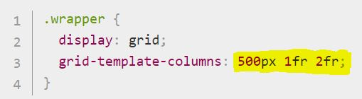
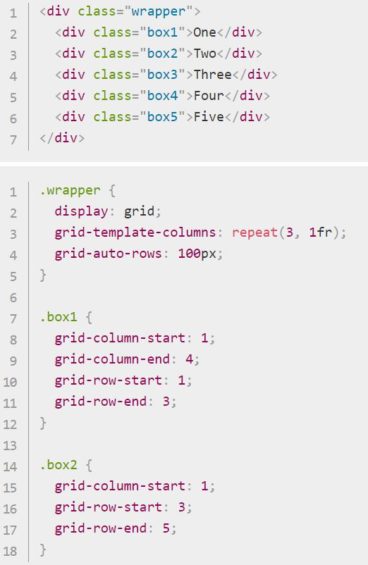
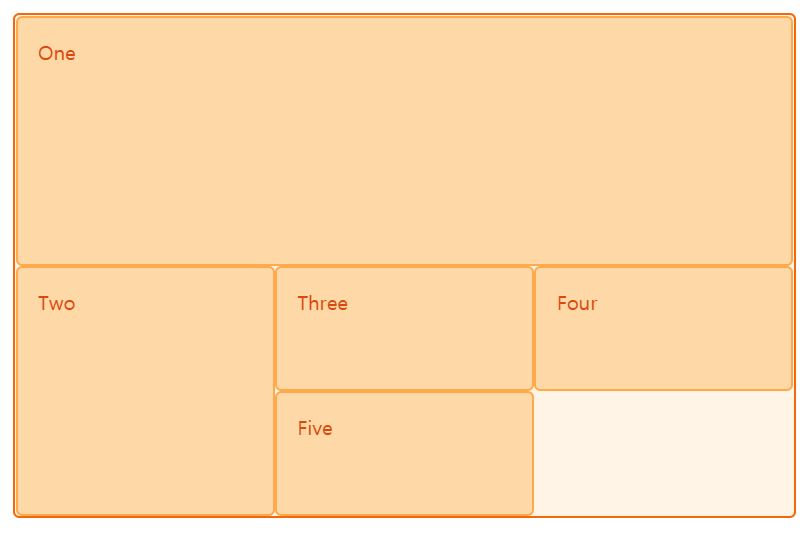
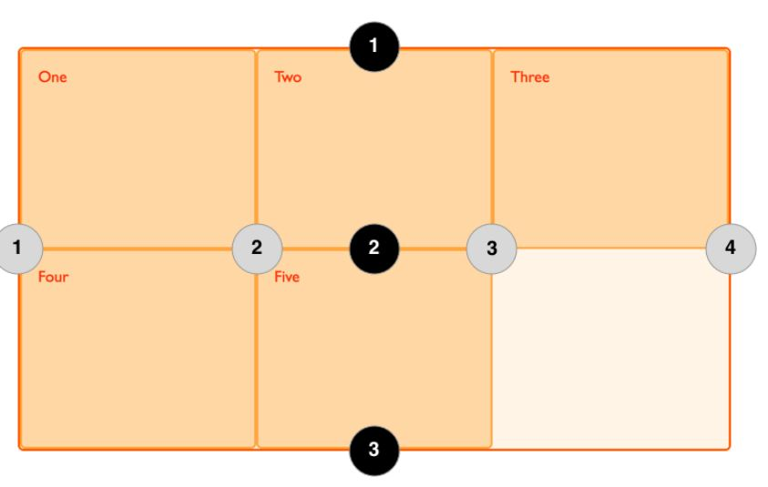

punction of grid
예로 고정된 크기의 track과 비율 단위로 지정한 track이 섞여 있다. 첫 번째 track은 500px의 공간을 차지하므로 이 고정 너비는 사용 가능한 공간에서 제외된다. 나머지 공간은 3개의 부분으로 나뉘며 2개의 유연한 track에 비율에 맞게 할당된다.
응용하기
아래 예제에선 처음 두 개의 아이템을 세 개의 열 방향 track으로 구성된 grid 위에 grid-column-start, grid-column-end, grid-row-start 그리고 grid-row-end
property를 써서 배치한다. 왼쪽에서 오른쪽으로 작업하면서, 첫 번째 아이템은 세로 열 방향의 1번 라인에 배치되고 세로 열 방향 4번 라인까지 확장된다.
이 경우에는 grid의 맨 오른쪽 라인까지 해당한다. 그리고 가로 방향의 라인을 기준으로 1번 라인부터 시작해서 행 3번 라인까지 차지하면서 결국,
두 개의 가로 행 track을 가로질러 걸치게 된다.
두 번째 아이템은 grid 세로 열의 1번 라인에서 시작해서 track 하나에 걸쳐 있다. 여기엔 기본값을 사용해서 마지막 라인은 지정할 필요가 없다. 가로 행 방향 라인을 기준으로 3번의 라인부터 5번 라인까지 두 개의 가로 행 track에 걸쳐 있다. 나머지 아이템은 grid 빈 자라에 자동으로 배치된다.
 grid를 정의할 때 라인이 아닌 grid track을 정의한다는 점을 명심해야 한다. 그러면 grid는 아이템을 배치할 때 쓸 수 있게 번호가 매겨진 라인을 자동으로 제공한다. 아래 그림처럼, grid가 세 개의 세로 열(Column)과 두 개의 가로 행(Row)으로 이루어져 있다면, 네 개의 Grid Line이 Column으로 자리 잡게 된다.
